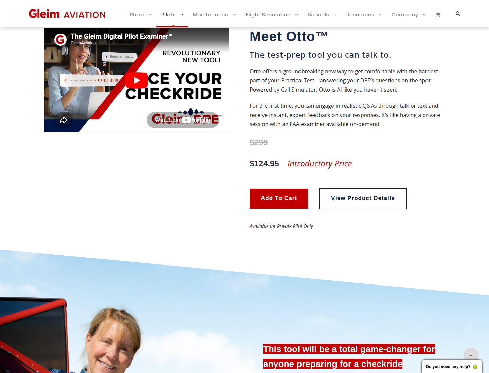
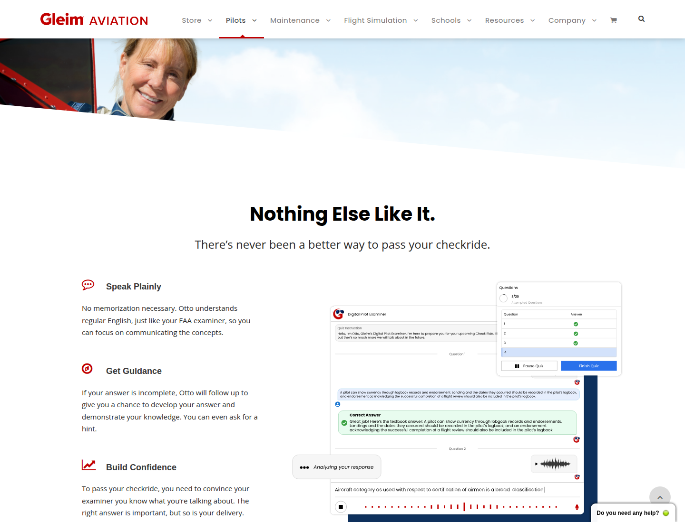
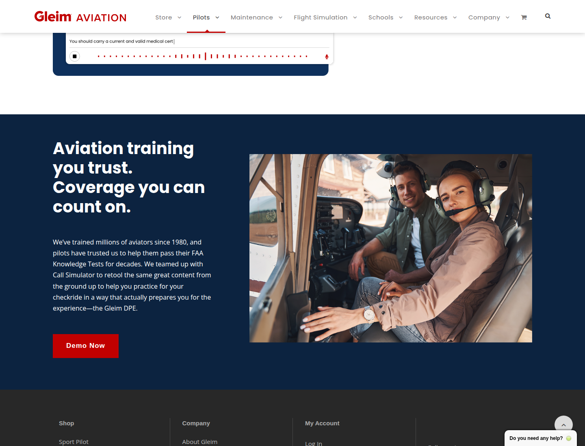

01 / Context
Overview
Turning product ambiguity into a clear user journey
Digital Pilot Examiner was a new AI-powered training product designed to help pilots practice the oral portion of their FAA practical exam. The team needed a launch-ready page ahead of a major aviation showcase, where visitors would need a quick way to understand the product and try the demo.
The core UX challenge was not simply to present information. It was to clarify who the product was for, why it mattered at a specific moment in the pilot training journey, and what action users should take next.
A high-stakes moment in pilot training
By the time students reach the oral and practical exam, they have already invested significant time, money, and effort into training. They need to do more than know the material — they need to communicate it clearly under pressure.
Digital Pilot Examiner let students practice answering aviation questions out loud and receive feedback. That distinction became central to the page's message: to pass, pilots have to answer questions out loud, so their practice should reflect that experience.
The challenge
Serve launch traffic and long-term product discovery
The immediate need was tied to an aviation conference showcase, but the page also had to become a durable product destination within the broader Gleim Aviation website.
- 01Explain a new AI product without relying on generic AI messaging.
- 02Speak directly to private pilots preparing for the oral and practical exam.
- 03Make the demo easy to find because the value was clearest through experience.
- 04Support evolving video and product assets without blocking launch.
- 05Balance education, demo, product-detail, and purchase paths on one CMS page.
02 / Process
My role
Clarifying the audience, hierarchy, and cross-functional story
Product framing
I worked with Product to understand where Digital Pilot Examiner fit in the private pilot journey and frame its value around oral exam preparation.
UX design
I designed the CMS page around quick comprehension, demo-first action, supporting product detail, and trust-building content.
Stakeholder alignment
I synthesized input from Product, Marketing, Operations, subject matter experts, and creative partners while launch materials evolved.
From launch request to product experience
A focused five-step approach
-
01
Understand the product and user moment
I clarified that the tool was most relevant after students had built aviation knowledge and were preparing to speak through it in an oral exam setting.
-
02
Define the page's primary job
The page needed to explain the concept quickly and move visitors toward a demo, rather than lead with a long product explanation.
-
03
Design for multiple levels of intent
Conference visitors, organic visitors, curious evaluators, and high-intent buyers each needed a clear path through demo, detail, and purchase actions.
-
04
Coordinate evolving launch assets
Video, graphics, animation, and campaign materials were created in parallel, so the structure had to launch cleanly and improve as assets became available.
-
05
Validate behavior after launch
I reviewed Lucky Orange heatmaps to assess whether visitors engaged with the intended demo CTA path.
03 / Solution
Final solution
A demo-first page built around a simple behavioral insight
The final page opens by connecting directly to the user's exam reality: passing requires answering questions out loud. That message grounds the AI product in a concrete need before inviting visitors to demo the experience.
Quick comprehension
The hero avoids technical AI language and frames the product around speaking answers out loud.
Demo-first CTA
“Demo Now” is primary, with “View Product Details” supporting visitors who need more context first.

Product explanation
Introducing Otto as a practice partner
The product section gives the AI a more approachable identity: Otto, “the test-prep tool you can talk to.” It explains realistic FAA-style Q&A, spoken or typed responses, and instant feedback while supporting visitors ready to evaluate price or purchase.

Trust and differentiation
Helping users believe the tool will prepare them
Supporting content connects the product's capabilities to the emotional pressure of an oral exam. Instead of abstract AI claims, the page emphasizes practical confidence.
- Speak plainlyFocus on communicating concepts, not memorizing scripts.
- Get guidanceReceive follow-up prompts or hints when an answer is incomplete.
- Build confidencePrepare for both subject knowledge and spoken delivery.

Credibility
Connecting innovation back to a trusted training brand
The final section reinforces Gleim's aviation training history and repeats the demo CTA. Once visitors understand the product and its benefits, they are reminded that the new experience is backed by an established aviation education provider.

04 / Impact
Outcome
A clear destination for launch traffic and a measurable CTA path
The final page launched as the product destination for Digital Pilot Examiner. It gave conference and marketing traffic a focused place to land, explained a new AI product in user-centered terms, and supported both demo exploration and purchase intent.
Shipped launch artifact
A public-facing home for a new AI-powered aviation training product.
Clear primary action
Demo engagement took priority, helping visitors understand an unfamiliar product quickly.
Behavioral validation
Post-launch heatmaps were used to assess engagement with the intended CTA path.
05 / Reflection
What this project taught me
The most valuable work was creating clarity
A successful product page is not only about visual polish. The most valuable work was clarifying the product's purpose, audience, timing, and next action.
Because the product was new, AI-forward, and tied to a specific training milestone, the design had to help users recognize whether it was relevant to them — and give internal teams a shared way to talk about it.
With more time, I would test the page across traffic sources, compare demo engagement against product-detail engagement, and explore additional entry points from other parts of the pilot training journey.
The transferable design skill
This project shows how I approach ambiguous product work: understand the user journey, clarify the product's value, align stakeholders around a focused goal, design a clear path to action, and validate behavior after launch.